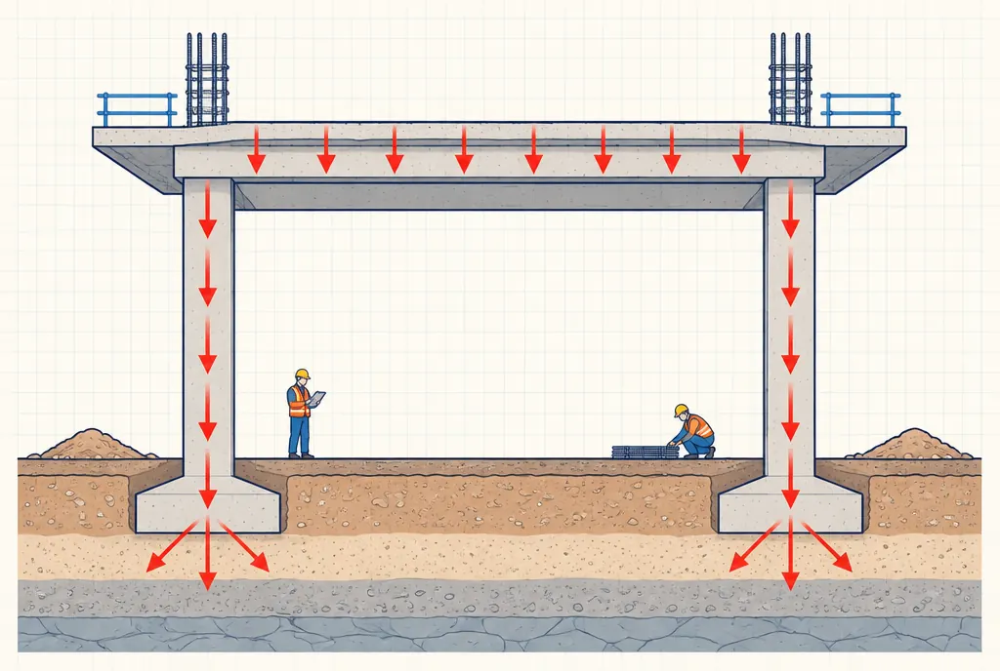
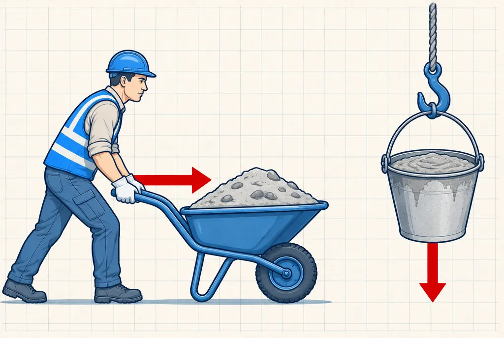
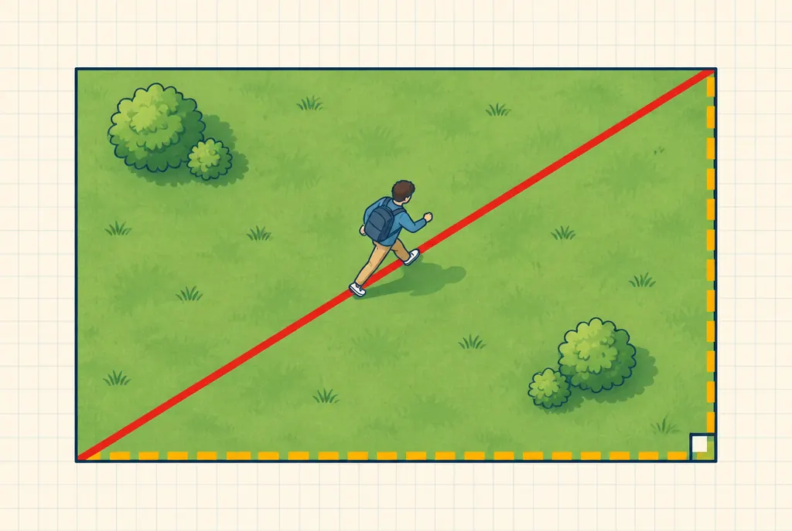
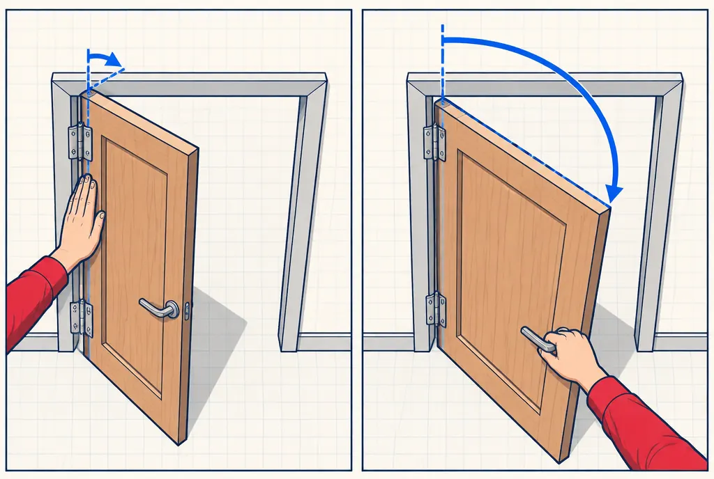
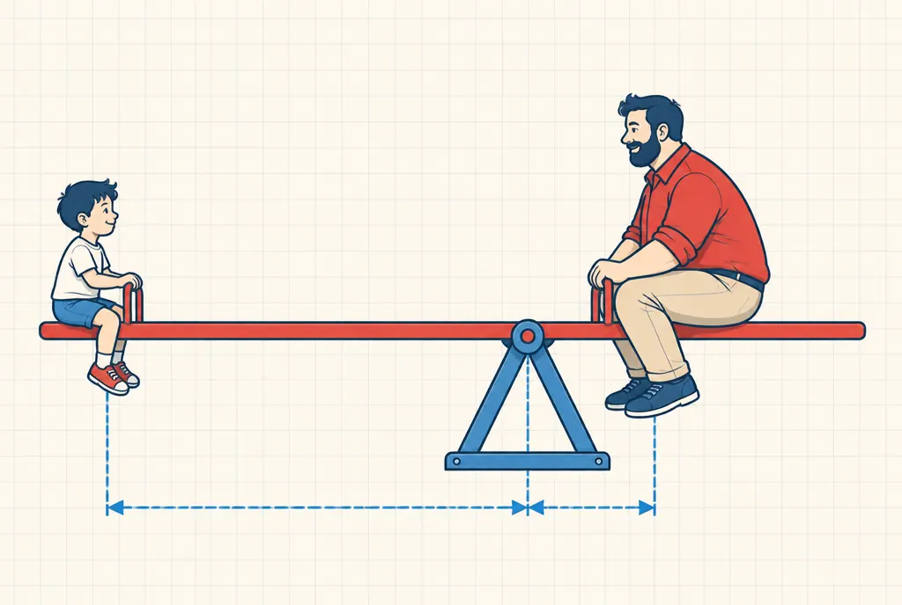
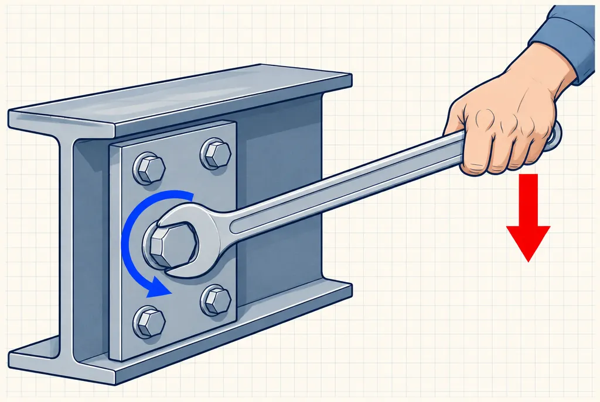
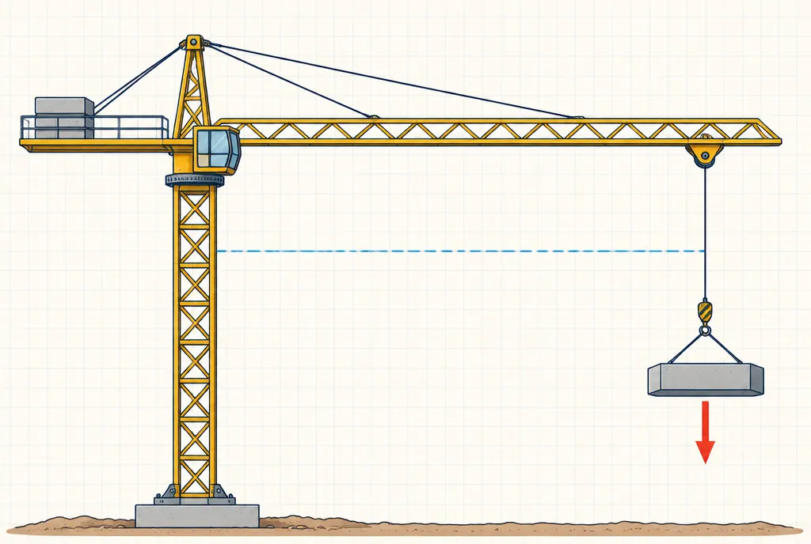
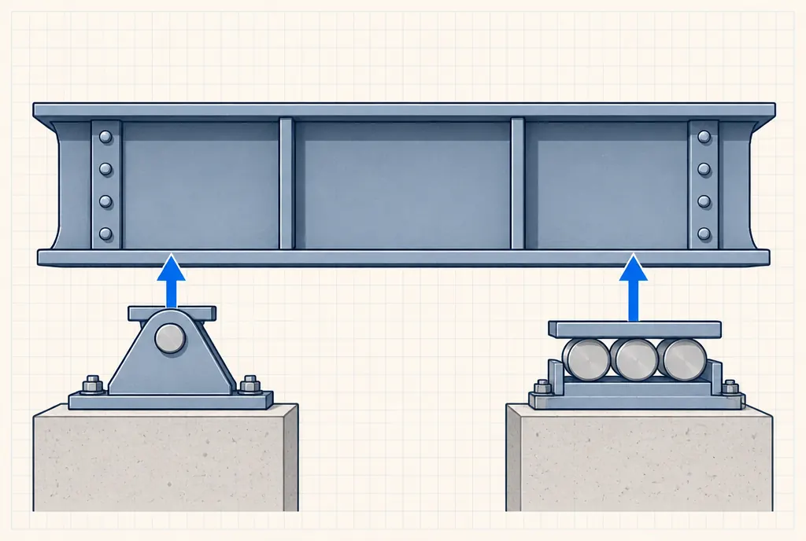
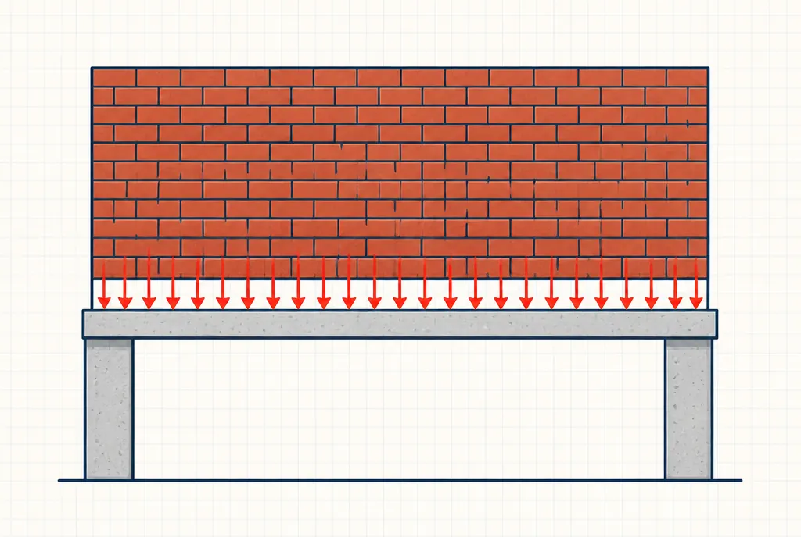

מה זה בכלל סטטיקה?
סטטי פירושו "עומד במקום". בסטטיקה בודקים מבנים שלא זזים: בניין, קורה, גשר, עגורן. השאלה שמעניינת אותנו היא אילו כוחות פועלים על כל חלק במבנה, כדי שנוכל לתכנן אותו חזק מספיק.
כל משקל בבניין עובר מלמעלה למטה, מחלק לחלק, עד שהוא מגיע לאדמה. זה מה ששרטטתם בעמוד הראשון במחברת:

תקרה←, ואזקורה←, ואזעמוד←, ואזיסוד←, ואזאדמה
כדי לחשב את כל זה צריך שני כלים: כוח, שהוא מה שדוחף או מושך, ומומנט, שהוא מה שמסובב. השיעור בונה את שניהם צעד אחר צעד.
בדוק את עצמך
בבניין של 3 קומות, איזה עמוד נושא יותר עומס: העמוד בקומת הקרקע או העמוד בקומה העליונה? למה?
תשובה: העמוד בקומת הקרקע. הוא נושא את כל מה שמעליו, כלומר את כל הקומות.
מה זה כוח
כוח הוא דחיפה או משיכה שגוף אחד מפעיל על גוף אחר. ("גוף" בשפה של פיזיקה פירושו כל חפץ: קורה, קיר, ארגז.) כוח יכול להזיז חפץ, לשנות את התנועה שלו, או לכופף ולמעוך אותו. משקל של עומס, לחץ של רוח ודחיפה של יד הם כולם כוחות.

אז למה בניין לא זז אם פועלים עליו כוחות? כי בכל מבנה שעומד במקום, הכוחות מאזנים זה את זה. כל דחיפה מקבלת דחיפה נגדית באותו גודל.
מסמנים כוח באות P או F, ובשרטוט מציירים אותו כחץ.
כוח מוגדר רק כשיודעים עליו ארבעה דברים:
קו הפעולה
תמשיך את החץ של הכוח בקו ישר לשני הכיוונים, בלי סוף. הקו הזה נקרא קו הפעולה של הכוח. נצטרך אותו בפרק 7: מומנט תלוי במרחק מהנקודה אל הקו הזה, לא אל ראש החץ.
איך קוראים שרטוט
- קו שחור עבה: קורה (או עמוד).
- נקודה שחורה עם אות: מקום על הקורה שיש לו שם (A, B, C).
- חץ אדום רציף: כוח. המספר לידו הוא הגודל.
- חץ כתום מקווקו: רכיב של כוח משופע (פרק 5).
- טבעת כחולה סביב נקודה: הנקודה שסביבה מחשבים מומנט (פרק 6).
- קו כחול מקווקו: הזרוע d (פרק 7).
- קו דק עם קווים קטנים בקצוות: קו מידה. המספר עליו הוא המרחק בין שתי הנקודות. השרטוט לא בקנה מידה, אז סומכים רק על המספר.
בדוק את עצמך
על קורה מונח שק מלט של 50 ק"ג, 2 מטר מהקצה השמאלי. כתוב את ארבעת הנתונים של הכוח.
תשובה: גודל 50, יחידה ק"ג (או 0.05 t), כיוון אנכי כלפי מטה, נקודת פעולה 2 מטר מהקצה השמאלי.
יחידות
בכיתה עובדים בעיקר בטון (t) לכוחות ובמטר (m) למרחקים.
רגע, טון זה לא משקל? בבנייה אומרים "כוח של 5 טון". הכוונה היא לכוח שדוחף למטה כמו משקל של 5 טון. לכן אצלנו טון הוא יחידה של כוח.
| יחידה | סימון | כמה זה שווה |
|---|---|---|
| טון | t | 1 t = 1000 kg |
| קילוגרם | kg | 1 kg = 1/1000 t = 0.001 t |
| קילו־ניוטון | kN | 1 t = 10 kN |
| ניוטון | N | 1 kg = 10 N |
ההמרה לניוטון היא בקירוב: בדיוק זה 9.81 ניוטון לכל ק"ג, ובכיתה מעגלים ל־10.
5 t → 5 × 1000 = 5000 kg · 5 kg → 5 ÷ 1000 = 0.005 t
בדוק את עצמך: 3 המרות
3500 kg = ? t · 7 t = ? kN · 0.4 t = ? kg
תשובה: 3500 ÷ 1000 = 3.5 t · 7 × 10 = 70 kN · 0.4 × 1000 = 400 kg
זווית, משולש וכיוון הכוח
מה זה זווית
זווית מודדת כמה קו אחד "נפתח" מקו אחר. מודדים אותה במעלות, ומסמנים מעלה ב־°.
- 0°: שני הקווים שוכבים אחד על השני.
- 90°: זווית ישרה, כמו פינה של דף או של חדר. קו שוכב וקו עומד יוצרים זווית ישרה. במקום "בזווית של 90°" אומרים גם ניצב.
- 45°: בדיוק באמצע בין שוכב לעומד.
שתי מילים שנשתמש בהן כל הזמן: אופקי פירושו שוכב, כמו רצפה. אנכי פירושו עומד, כמו קיר.
שלושה סוגים של כיוון
בשני הציורים האחרונים: הקו המקווקו הוא קו שוכב לעזרה, והקשת הכחולה היא הזווית α.
כוח משופע הוא כוח שלא שוכב ולא עומד. הוא נוטה באלכסון. כדי לדעת כמה הוא נוטה, נותנים מספר של זווית במעלות.
בדוק את עצמך
כוח נוטה 20° מהקו העומד. מהי α?
תשובה: α = 90 − 20 = 70°.
פירוק כוח משופע
בשרטוטים, כל המרחקים מסומנים לאורך הקורה, שהיא שוכבת. בפרק 7 נראה שבשביל מומנט צריך מרחק שנמדד בזווית ישרה לכוח. בכוח עומד זה פשוט, כי המרחק לאורך הקורה הוא בדיוק המרחק הנכון. בכוח משופע המרחק הזה לא מופיע בשרטוט.
הפתרון: מחליפים את הכוח המשופע בשני כוחות פשוטים, אחד אופקי ואחד אנכי, שביחד עושים בדיוק את אותו הדבר. זה נקרא פירוק כוח.
דמיון מהחיים: מי שחוצה מגרש באלכסון מגיע לאותו מקום כמו מי שהולך קודם ימינה ואחר כך קדימה. ההליכה באלכסון שווה לשתי הליכות ישרות.

- Px הוא הרכיב האופקי: החלק של הכוח שדוחף לצד, לאורך ציר X.
- Py הוא הרכיב האנכי: החלק של הכוח שדוחף למעלה או למטה, לאורך ציר Y.
ה־x וה־y הקטנים הם רק תווית שאומרת לאיזה כיוון. רכיב פירושו "חלק".
המשולש
הכוח P ושני הרכיבים יוצרים יחד משולש ישר זווית: משולש שבאחת הפינות שלו יש זווית ישרה (90°).
- צלע היא קו אחד של המשולש.
- היתר היא הצלע הארוכה, זו שמול הפינה הישרה. אצלנו היתר הוא הכוח P עצמו.
- Px היא הצלע שנוגעת בזווית α. קוראים לה "הצלע שליד α".
- Py היא הצלע שרחוקה מ־α ונמצאת מולה. קוראים לה "הצלע שמול α".
הנקודה · פירושה כפול, בדיוק כמו ×. P · cos α פירושו "P כפול המספר שיוצא מ־cos α".
בדיקת היגיון: כוח שוכב (0°) הולך כולו לצד, ואכן cos 0° = 1 ו־sin 0° = 0. כוח עומד (90°) הולך כולו למטה, ואכן cos 90° = 0 ו־sin 90° = 1.
טריק לזכור: cos הולך עם הצלע שצמודה לזווית (האופקית). sin הולך עם הצלע שמול הזווית (האנכית). זה נכון רק כש־α נמדדת מהקו השוכב. לכן תמיד בודקים קודם מאיפה הזווית נמדדת.
ערכים שכדאי להכיר
| α | sin α | cos α |
|---|
מחשבון פירוק: שנה את המספרים וראה מה קורה
נסה: שים α = 0 ואחר כך α = 90. מה קורה ל־Py? וב־45°, מה אפשר לומר על Px ו־Py?
לאן מצביעים Px ו־Py
בכיתה קיבלתם 8 שבלונות. כאן מוצגות 4, אחת לכל כיוון אלכסוני. ב־4 האחרות החץ מצויר בצד השני של הנקודה (הוא מושך במקום לדחוף), אבל הכלל זהה:
הקווים המקווקווים בציורים הם קו שוכב וקו עומד לעזרה בלבד.
דוגמה פתורה
מהמחברת: כוח P = 10 t בזווית α = 30° בנקודה A.
במחברת חישבו רק את Px. ה־Py של הכוח הזה הוא 5 טון.
בדוק את עצמך: פירוק כוח
1. P = 6 t, α = 45°. מצא Px ו־Py. האם Px + Py = 6?
תשובה: Px = Py = 6 · 0.707 = 4.24 t. לא: 4.24 + 4.24 = 8.48. הבדיקה הנכונה: 4.24² + 4.24² ≈ 36 = 6².
2. מהמחברת: פרק כל כוח ל־Px ול־Py: 8 t בזווית 25° בנקודה A, 5 t בזווית 60° בנקודה B, 1.5 t בזווית 45° בנקודה C.
| נקודה | Px = P·cos α | Py = P·sin α |
|---|---|---|
| A | 8 · 0.906 = 7.25 t | 8 · 0.423 = 3.38 t |
| B | 5 · 0.5 = 2.5 t | 5 · 0.866 = 4.33 t |
| C | 1.5 · 0.707 = 1.06 t | 1.5 · 0.707 = 1.06 t |
הערה: בשרטוט שבמחברת הזווית ב־A נראית כמו 35°, אבל בחישוב השתמשו ב־25°. הטבלה מתאימה ל־25°. אם הזווית היא 35°, יוצא Px = 6.55 t ו־Py = 4.59 t. כדאי לבדוק עם המורה.
מומנט: כוח שמסובב
עד עכשיו דיברנו על כוח שדוחף. אבל כוח יכול גם לסובב. מומנט הוא המדד לכמה חזק כוח מסובב משהו סביב נקודה.
מה זה "סביב נקודה A"? תדמיין שתקעת מסמר בנקודה A, והקורה יכולה רק להסתובב סביב המסמר, כמו מחוג של שעון. המומנט אומר כמה חזק הכוח מסובב את הקורה סביב המסמר.
תחשוב על דלת. אם תדחוף אותה ליד הצירים שלה (הפרזולים שהיא מסתובבת עליהם), היא כמעט לא זזה. אם תדחוף באותו כוח ליד הידית, היא נפתחת בקלות. הכוח זהה, אבל המרחק מהצירים שונה, ולכן גם הסיבוב שונה.

למה כופלים כוח במרחק? הנדנדה

כוח קטן רחוק מסובב בדיוק כמו כוח גדול קרוב. מה שקובע הוא הכוח כפול המרחק. זו גם הסיבה שבורג תקוע משחררים עם מפתח ארוך: אותו כוח של היד, מרחק גדול יותר, ולכן סיבוב חזק יותר.

בסוגריים המרובעים כתובה היחידה. "ניצב" פירושו בזווית ישרה, ונסביר אותו בפרק 7.
היחידה של מומנט היא t·m ("טון־מטר"), כי מכפילים טון במטר.
הדוגמה של העגורן

בדוק את עצמך
כוח של 3 t נמצא במרחק 2 m מהנקודה. מה המומנט? ומה יקרה אם נכפיל את המרחק?
תשובה: 3 × 2 = 6 t·m. במרחק כפול: 3 × 4 = 12 t·m. גם המומנט מוכפל.
הזרוע d: המרחק הניצב
הזרוע d היא המרחק הקצר ביותר מהנקודה אל קו הפעולה של הכוח (ההמשך של החץ, מפרק 2). מודדים אותה בקו שפוגש את קו הפעולה בזווית ישרה, ולכן אומרים "מרחק ניצב". זה לא המרחק הישר מהנקודה אל ראש החץ.
זו ה"הערה החשובה" מהלוח:
הקו האפור המקווקו הוא קו הפעולה. הריבוע הקטן מסמן זווית ישרה. הקשת הכחולה מראה לאן הכוח מסובב.
בעגורן מפרק 6, הנקודה A נמצאת למטה והמשקל תלוי למעלה. ובכל זאת d הוא רק המרחק לרוחב, כי הכוח אנכי.
איך מודדים d על קורה
בקורה שוכבת עם כוחות אנכיים, הזרוע היא פשוט המרחק לאורך הקורה בין הנקודה לכוח. שמים אצבע על הנקודה שבחרת והולכים לאורך הקורה עד הכוח. סופרים את כל קווי המידה שעוברים בדרך.
כוח שהקו שלו עובר דרך הנקודה לא מסובב
אם קו הפעולה של הכוח עובר דרך הנקודה, המרחק הניצב הוא 0, ולכן M = P × 0 = 0. זה קורה כשהכוח פועל בנקודה עצמה (לכן בתרגילים מהכיתה מופיע 3×0 ומוחקים אותו), וגם כשהכוח רחוק אבל "מכוון" אל הנקודה.
Px לא נעלם: בפרק 11 (סמכים ותגובות) הוא נכנס לחשבון הכוחות האופקיים. ובעמוד עומד זה הפוך: Py הוא שפועל לאורך העמוד ולא נותן מומנט.
בדוק את עצמך
כוח אנכי של 4 t. הנקודה A נמצאת 3 m שמאלה מהכוח ו־2 m מתחתיו. מה d, ומה המומנט?
תשובה: d = 3 m, רק המרחק לרוחב, לא המרחק באלכסון. M = 4 × 3 = 12 t·m.
כיוון המומנט: פלוס או מינוס
כוח יכול לסובב לשני כיוונים, ולכן לכל מומנט יש סימן. בכיתה עובדים עם הכלל הזה:
"עם השעון = פלוס" היא הסכמה של הכיתה. בספרים אחרים לפעמים זה הפוך. העיקר להחזיק באותה הסכמה לאורך כל התרגיל.
איך מחליטים
כוחות אנכיים (קורה שוכבת)
כוחות אופקיים (עמוד עומד)
אותו רעיון: המסמר בנקודה, והעמוד מסתובב סביבו. כוח ימינה מעל המסמר דוחף את הראש של העמוד ימינה, והעמוד מסתובב עם השעון (+).
מאמן סימנים: תרגל עד שזה אוטומטי
מצא את הסימן ואת הגודל של המומנט סביב הנקודה A.
בדוק את עצמך
כוח של 2 t מצביע למעלה ונמצא 3 m משמאל ל־A. מה המומנט, כולל סימן?
תשובה: הכוח מרים את הצד השמאלי, והקורה מסתובבת עם השעון: +6 t·m.
סכום מומנטים סביב נקודה
כשיש כמה כוחות, מחשבים את המומנט של כל אחד מהם סביב אותה נקודה, ואז מחברים את כולם עם הסימנים. זה כל מה שהתרגילים מהלוח מבקשים.
- אם יש כוח משופע, מפרקים אותו ל־Px ול־Py.
- בוחרים את הנקודה שסביבה מחשבים, ומסמנים אותה.
- לכל כוח מוצאים את הזרוע d. כוח שהקו שלו עובר בנקודה, או Px על הקורה, מקבל 0.
- לכל כוח קובעים סימן: עם השעון +, נגד השעון −.
- מכפילים P × d ומחברים הכל. היחידות הן t·m.
מה אומר המספר שיצא
MA פירושו "סכום המומנטים סביב הנקודה A". האות הקטנה למטה אומרת סביב איזו נקודה חישבנו.
- תוצאה חיובית (למשל MA = +15 t·m): ביחד, כל הכוחות מנסים לסובב את הקורה עם השעון סביב A.
- תוצאה שלילית: ביחד הם מסובבים נגד השעון.
- תוצאה 0: הכוחות שמסובבים לכל צד מאזנים זה את זה, והקורה לא מסתובבת סביב הנקודה.
סביב כל נקודה יוצא מספר אחר, כי כל המרחקים משתנים כשמחליפים נקודה. זה תקין. כאן מתאמנים על כל הנקודות. בפרק 11 תראה שבחישוב תגובות בוחרים דווקא את נקודות הסמכים.
בכל דוגמה אפשר לבחור את נקודת הסיבוב בכפתורים. בשרטוט הנקודה מקבלת טבעת כחולה, מתחת לכל כוח כתוב לאן הוא מסובב, ולמטה מצוירת הזרוע של כל כוח, נמדדת מהנקודה. הטבלה מראה את החישוב של כל כוח.
תרגילי מומנטים: עכשיו תורך
אלה התרגילים שנשארו על הלוח בלי פתרון, מהקל לקשה. פתור כל אחד על דף לפי 5 הצעדים. אם נתקעת, פתח רמז אחד. כדי לבדוק רק את התוצאה, פתח "תשובות סופיות". הפתרון המלא נמצא בסוף.
סמכים ותגובות
עד עכשיו חישבנו מומנטים של כוחות שפועלים על קורה. אבל קורה אמיתית לא מרחפת באוויר: היא יושבת על סמכים. סמך הוא המקום שעליו הקורה נשענת, למשל עמוד או קיר.
הקורה דוחפת את הסמך למטה, והסמך דוחף אותה בחזרה. הכוח שהסמך מחזיר לקורה נקרא תגובה (או "ריאקציה"). בפרק הזה לומדים לחשב כמה כל סמך דוחף.

שני סוגי סמכים
בשרטוטים מהכיתה: משולש עם קווקוו מתחת הוא סמך קבוע. משולש עם עיגולים קטנים מתחת הוא סמך נייד. התגובות מצוירות בירוק.
בקורה עם סמך קבוע אחד וסמך נייד אחד יש 3 תגובות לא ידועות: H ו־V בסמך הקבוע, ו־V בסמך הנייד.
שלוש המשוואות
הקורה עומדת במקום. היא לא זזה לצדדים, לא זזה למעלה או למטה, ולא מסתובבת. לכן, כשמכניסים לחשבון גם את התגובות, כל הכוחות מאזנים זה את זה:
Σ (האות היוונית סיגמא) פירושה "סכום של". ΣFx פירושו "סכום הכוחות בכיוון x".
זה ה־"8 − 8 = 0" שעל הלוח: מה שדוחף לצד אחד שווה בדיוק למה שדוחף לצד השני. בפרק 9 הסכומים לא יצאו 0, כי עוד לא היו סמכים. עכשיו, כשהתגובות בפנים, הם תמיד יוצאים 0.
הטריק: מומנט סביב סמך
יש לנו 3 נעלמים, ובכל משוואה רגילה כולם מופיעים יחד. הטריק הוא לחשב מומנט סביב אחד הסמכים. התגובות של הסמך הזה עוברות דרך הנקודה, אז הזרוע שלהן 0 והן נעלמות מהמשוואה (פרק 7). נשאר נעלם אחד בלבד: התגובה של הסמך השני.
- ΣM סביב הסמך הקבוע → מוצאים את V של הסמך הנייד.
- ΣM סביב הסמך הנייד → מוצאים את V של הסמך הקבוע.
- ΣFx → מוצאים את H של הסמך הקבוע. כאן כל הכוחות האופקיים נכנסים, כולל ה־Px שמחקנו בחישובי המומנט.
- ΣFy → בדיקה. אם יוצא 0, החישוב נכון.
ומה אם יוצא מינוס?
בהתחלה אנחנו לא יודעים לאן התגובה מצביעה, אז מניחים: V למעלה ו־H ימינה. אם בסוף יוצא מספר שלילי, ההנחה הייתה הפוכה: התגובה מצביעה למטה (או שמאלה). זו לא טעות בחישוב. הגודל נכון, רק הכיוון התהפך. ראה דוגמה 2.
חימום: רק ΣFx
כל שלושת הכוחות מצביעים שמאלה. HA צריך לאזן אותם:
הכוחות כבר מאזנים זה את זה: 18 ימינה, ו־10 + 8 = 18 שמאלה.
- מזהים את הסמך הקבוע (H, V) ואת הסמך הנייד (V). מציירים את התגובות: V למעלה, H ימינה.
- מפרקים כל כוח משופע ל־Px ול־Py.
- מחליפים כל עומס מפורס בשקול R (פרק 12).
- ΣFx = 0 → H.
- ΣM = 0 סביב הסמך הקבוע → V של הנייד.
- ΣM = 0 סביב הסמך הנייד → V של הקבוע.
- בודקים: ΣFy = 0.
בדוק את עצמך
קורה באורך 6 m. סמך קבוע ב־A (בקצה השמאלי) וסמך נייד ב־B (בקצה הימני). כוח של 12t למטה, 2 m מ־A. מה התגובות?
תשובה: ΣMA: +12×2 − VB×6 = 0 → VB = 4 t. ΣMB: +VA×6 − 12×4 = 0 → VA = 8 t. HA = 0. בדיקה: 8 + 4 − 12 = 0 ✓. הסמך הקרוב יותר לכוח מקבל יותר.
עומס מפורס אחיד
עד עכשיו כל כוח פעל בנקודה אחת. אבל הרבה עומסים פרוסים לאורך הקורה: קיר שעומד עליה, תקרה שמונחת עליה, ואפילו המשקל של הקורה עצמה. עומס כזה נקרא עומס מפורס. כשהוא שווה בכל מקום, הוא עומס מפורס אחיד.

L = האורך שעליו העומס פרוס, במטרים.
יש גם עומס מפורס ליחידת שטח, ביחידות t/m² (טון למטר מרובע), למשל עומס על רצפה. בפרק הזה עובדים רק עם עומס לאורך, t/m.
הכוח השקול R
כדי לחשב, מחליפים את כל העומס המפורס בכוח אחד ששקול לו, כלומר עושה אותו דבר. הכוח הזה נקרא השקול, R.
למה באמצע? תחשוב על קרש ארוך שמשקלו שווה לכל אורכו. אם תנסה לאזן אותו על אצבע אחת, הוא יתאזן בדיוק באמצע. כל המשקל שלו מתנהג כאילו הוא מרוכז שם.
למה כופלים? אם כל מטר שוקל 2 טון, ויש 4 מטרים, ביחד זה 8 טון.
כמה עומסים מפורסים
כשיש כמה קטעים עם עומס שונה, לכל קטע יש שקול משלו, באמצע של הקטע שלו:
בדוק את עצמך
עומס של 3 t/m פרוס על 4 m, מ־A עד B. כמה שווה השקול, ואיפה הוא פועל?
תשובה: R = 3 × 4 = 12 t, באמצע, 2 m מ־A.
תרגילי תגובות: עכשיו תורך
ארבעת התרגילים מסוף השיעור של 16/11. בכל אחד: חשב את התגובות בסמכים לפי המתכון מפרק 11. נתקעת? פתח רמז אחד. כדי לבדוק רק את התוצאה, פתח "תשובות סופיות".
את כיווני הכוחות המשופעים קראתי מהשרטוט שעל הלוח. אם אצלך במחברת כוח מצביע לכיוון אחר, התשובות ישתנו.
מבחן עצמי
12 שאלות על כל החומר. כתוב תשובות על דף, ורק אז פתח את התשובות.
- המר: 2.5 t = ? kg = ? kN
- המר: 750 kg = ? t
- P = 12 t, α = 60° מהקו השוכב. מצא Px ו־Py.
- כוח של 6 t נוטה 30° מהקו העומד ומצביע ימינה ולמטה. מהי α? מצא Px ו־Py ואת הכיוונים שלהם.
- כוח של 4 t מצביע למטה ונמצא 2 m משמאל ל־A. מהו MA?
- עמוד עומד: כוח של 3 t מצביע שמאלה, 2 m מעל A. מהו MA?
- קורה: A ב־0, B ב־3 m, C ב־7 m. 5 t למטה ב־B, 2 t למעלה ב־C. חשב MA ו־MC.
- כוח של 10 t בזווית 30°, מצביע ימינה ולמטה, בקצה C של קורה, 4 m מ־A. חשב MA.
- נכון או לא נכון: (א) Px + Py = P. (ב) כוח שמצביע למעלה תמיד נותן מינוס. (ג) מומנט סביב נקודה שאין עליה כוח הוא תמיד 0.
- עומס של 5 t/m פרוס על 6 m. כמה שווה השקול, ואיפה הוא פועל?
- קורה באורך 10 m: סמך קבוע ב־A (בקצה השמאלי), סמך נייד ב־B (בקצה הימני). כוח של 20 t למטה, 3 m מ־A. מצא את VA ואת VB.
- בחישוב יצא VA = −2 t. מה זה אומר?
תשובות
- 2500 kg, 25 kN.
- 750 ÷ 1000 = 0.75 t.
- Px = 12 · 0.5 = 6 t, Py = 12 · 0.866 = 10.39 t.
- α = 90 − 30 = 60°. Px = 6 · 0.5 = 3 t ימינה, Py = 6 · 0.866 = 5.2 t למטה.
- הכוח מוריד את הצד השמאלי, נגד השעון: MA = −4 × 2 = −8 t·m.
- הכוח דוחף את הראש של העמוד שמאלה, נגד השעון: MA = −3 × 2 = −6 t·m.
- MA = +5×3 − 2×7 = +1 t·m. MC = −5×4 + 2×0 = −20 t·m.
- Py = 10 · 0.5 = 5 t למטה. Px פועל לאורך הקורה ולא נותן מומנט. MA = +5 × 4 = +20 t·m. טעות נפוצה: 10 × 4 = 40.
- (א) לא נכון. (ב) לא נכון, זה תלוי בצד שבו הכוח נמצא. (ג) לא נכון, ראה דוגמה 4 בפרק 9.
- R = 5 × 6 = 30 t, באמצע, 3 m מכל קצה.
- ΣMA: +20×3 − VB×10 = 0 → VB = 6 t. ΣMB: +VA×10 − 20×7 = 0 → VA = 14 t. בדיקה: 14 + 6 − 20 = 0 ✓.
- הגודל של התגובה הוא 2 t, אבל היא מצביעה למטה ולא למעלה כפי שהנחנו. הסמך מושך את הקורה למטה.
טעויות נפוצות
דף נוסחאות
- מה פועל? תעבור על כל חץ: כמה, לאן, איפה.
- משופע? פרק: Px = P·cos α, Py = P·sin α. קודם בדוק שהזווית נמדדת מהקו השוכב.
- סביב מה? סמן את הנקודה. תדמיין שם מסמר.
- לכל כוח: מה המרחק הניצב מהמסמר אל קו הפעולה? הקו עובר דרך המסמר, או Px על קורה שוכבת: 0.
- לאן מסובב? עם השעון +, נגד השעון −.
- מכפילים ומחברים. התוצאה ב־t·m.
מומנט = כמה חזק × כמה רחוק מהמסמר, בניצב.
- המרות
- 1 t = 1000 kg = 10 kN
- רכיב אופקי
- Px = P · cos α
- רכיב אנכי
- Py = P · sin α
- בדיקת פירוק
- Px² + Py² = P²
- α נמדדת מ...
- הקו השוכב (ציר X)
- מומנט
- M = P × d [t·m]
- d
- מרחק ניצב מהנקודה אל קו הפעולה
- עם השעון / נגד
- עם השעון פלוס, נגד השעון מינוס
- הקו של הכוח עובר בנקודה
- d = 0 → M = 0
- שקול של עומס מפורס
- R = q × L, באמצע הקטע
- סמך נייד / סמך קבוע
- תגובה אחת (V) / שתי תגובות (H, V)
- שיווי משקל
- ΣFx = 0 · ΣFy = 0 · ΣM = 0
- תגובה שלילית
- הכיוון הפוך ממה שהנחנו
- Px על קורה שוכבת
- M = 0 סביב נקודות על הקורה
מילון מונחים
- סטטיקה
- חישוב של כוחות על מבנים שעומדים במקום ולא זזים.
- כוח (P או F)
- דחיפה או משיכה. מציירים אותו כחץ.
- טון (t)
- אצלנו: כוח ששווה למשקל של 1000 ק"ג.
- קורה
- חלק שוכב במבנה שנושא עומס. בשרטוט: קו שחור עבה שוכב.
- עמוד
- חלק עומד במבנה.
- אופקי / אנכי
- שוכב, כמו רצפה / עומד, כמו קיר.
- משופע
- באלכסון: לא שוכב ולא עומד.
- זווית, מעלות (°)
- כמה קו נוטה ביחס לקו אחר. 0° = שוכב עליו, 90° = ניצב לו.
- זווית ישרה, ניצב
- זווית של 90°, כמו פינה של דף.
- α (אלפא)
- אות יוונית. אצלנו: הזווית בין הכוח לקו השוכב.
- ציר X / ציר Y
- קו שוכב / קו עומד שמשמשים כקווי עזר לכיוונים.
- רכיב
- חלק של כוח משופע: החלק שהולך לצד (Px) או החלק שהולך למעלה או למטה (Py).
- פירוק כוח
- החלפת כוח משופע בשני רכיבים, אחד אופקי ואחד אנכי.
- משולש ישר זווית
- משולש שבאחת הפינות שלו יש זווית של 90°.
- צלע, יתר
- צלע היא קו אחד של המשולש. היתר הוא הצלע הארוכה, מול הפינה הישרה. אצלנו: הכוח P.
- ליד / מול (הזווית)
- הצלע שנוגעת בזווית / הצלע שרחוקה ממנה.
- sin, cos
- כפתורים במחשבון: מכניסים זווית ומקבלים מספר בין 0 ל־1, שאומר איזה חלק מהכוח הולך לכל כיוון.
- · (נקודה באמצע)
- כפול, כמו ×.
- DEG / RAD
- שני מצבים של מחשבון. אצלנו תמיד DEG (מעלות).
- מומנט (M)
- כמה חזק כוח מסובב משהו סביב נקודה. M = P × d.
- t·m (טון־מטר)
- היחידה של מומנט: טון כפול מטר.
- "סביב A"
- מחשבים כאילו תקוע בנקודה A מסמר, והקורה מסתובבת סביבו.
- MA
- סכום המומנטים סביב הנקודה A.
- קו פעולה
- הקו הישר שהחץ של הכוח נמצא עליו, כשממשיכים אותו לשני הכיוונים.
- זרוע (d)
- המרחק הניצב מהנקודה אל קו הפעולה. כמו אורך הידית של מפתח ברגים.
- קו מידה
- קו דק עם קווים קטנים בקצוות ומספר עליו: המרחק בין שתי נקודות.
- עם / נגד כיוון השעון
- סיבוב כמו מחוגי השעון (↻, פלוס) / סיבוב הפוך (↺, מינוס).
- סמך
- המקום שעליו הקורה נשענת, למשל קיר או עמוד.
- סמך נייד
- סמך על גלגלים: מחזיק רק למעלה ולמטה. תגובה אחת, V.
- סמך קבוע (מפרק)
- סמך שלא זז לשום כיוון. שתי תגובות, H ו־V.
- תגובה (ריאקציה)
- הכוח שהסמך דוחף בחזרה אל הקורה. V = התגובה האנכית, H = התגובה האופקית.
- Σ (סיגמא)
- "סכום של". ΣFx = סכום הכוחות האופקיים.
- שיווי משקל
- מצב שבו הקורה לא זזה ולא מסתובבת: ΣFx = 0, ΣFy = 0, ΣM = 0.
- עומס מפורס אחיד (q)
- עומס שפרוס באופן שווה לאורך הקורה, ביחידות t/m (טון למטר).
- שקול (R)
- כוח אחד שמחליף עומס מפורס: R = q × L, באמצע הקטע.